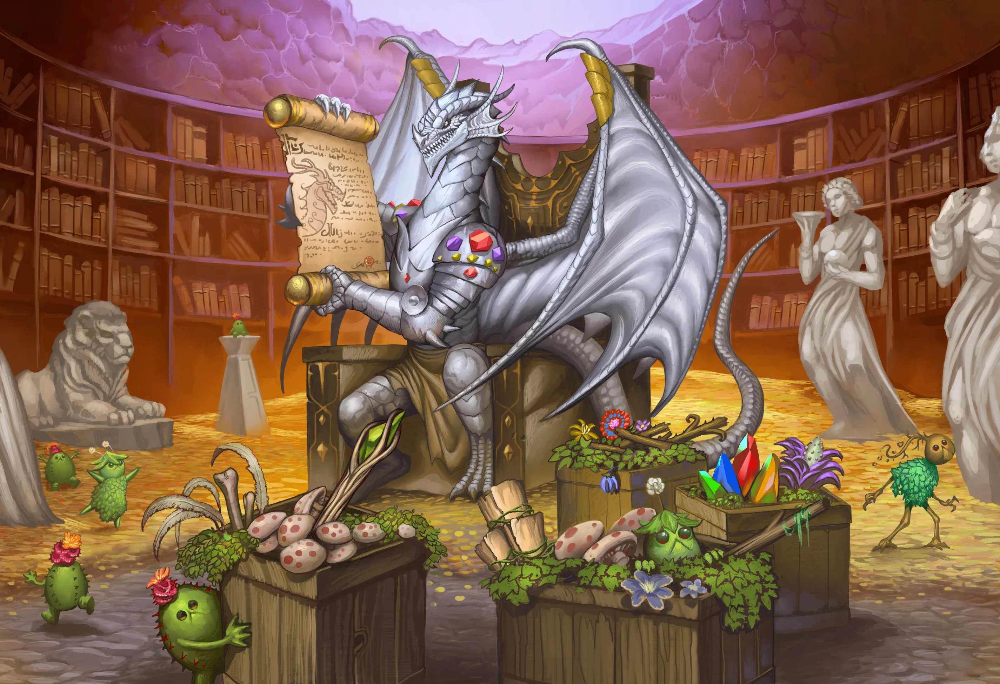

尊贵的瑞扎尼瓦什：
怀着迫不及待的笔触与仍因发现之狂喜而激荡不已的心潮，我写下这封信函。遵照您的嘱托，我很荣幸向您呈报关于四种新近发现的莱希龙的研究成果，连同我们对毒蕈龙的既有认知一并奉上，不敢有片刻耽搁。
您深知我绝非闭门造车的书斋学者，而是一位受无尽田野考察热忱所驱使、亲自深入世间探寻的渊博学者。随信附上的，是我此次远征考察笔记的精编手稿，详尽记述了我深入这片大地那些向来“大隐于市”的角落时，关于莱希龙所取得的种种发现。其中记述的诸多内容，此前从未见诸笔墨！
请您放心，学术严谨性是我绝不敢轻忽的重责。正因您看重我身为学者的资历与操守，才亲手将此重任托付于我；我也竭尽全力，只为呈上一份配得上您期许的翔实而深刻的报告。为此，我综合运用了第一手实地观察、深入访谈与鞭辟入里的剖析等多种研究方法。如今全稿业已杀青，静候您在闲暇之余尽早审阅。
闲言少叙，谨将这些书页留予您从容披阅；愿我在与繁花龙、乔木龙、丰收龙及巨藻龙的种种交往中所体会到的那份惊叹与奇妙，也能同样降临于您心间。
一如既往，竭诚为您效劳
――永光贤者卡利赞德雷克斯
欢迎来到《Battlezoo 巨龙：莱希龙》！自几年前《Battlezoo 先祖：巨龙》问世以来，书中的毒蕈龙便大受欢迎，我们也收到了许多读者的来信，期盼看到这一巨龙谱系的其余成员得到完整充实的呈现。如今我非常高兴能在此与诸位分享它们――本书由才华横溢、创意十足的作家杰西卡・雷德科普（Jessica Redekop）执笔，她曾多次为 Roll for Combat 与 Paizo 撰稿。
正如最初的巨龙族裔一样，“扮演一条巨龙既能妙趣横生，又能与其他族裔的角色保持平衡”听起来或许令人难以置信，但我确信这一版本做到了这一点――这尤其要归功于参与测试的玩家们，他们在肯定原有设计框架的同时贡献了海量绝妙点子，并最终融入了成书之中。你可以与扮演任何其他种族的玩家并肩扮演一条巨龙而不会喧宾夺主；巨龙职业与其他职业相比也是一个有趣且平衡的选择，其表现通常与同类定位的职业相当，尽管在追求超越游戏预期的极限构筑强度方面，它或许并不处于最顶尖的超模行列。
闲话少说，让我们一起来看看这本书都准备了哪些精彩内容吧！
跟随我们的叙述者――龙类学者卡利赞德雷克斯撰写的田野考察指南，探索莱希龙生活的方方面面。通过与形形色色的莱希龙及其他巨龙交谈，卡利赞德雷克斯揭开了莱希龙生命周期与生活方式的诸多细节，并对它们的整体文化提出了若干令人惊奇的观察见解。
本章是为所有玩家准备的重头戏。在这里，我们收录了扮演任意莱希龙血统的巨龙角色所需的全部内容，包括种族基础规则、全新的巨龙职业、巨龙蹂躏者与巨龙法师两个子职，以及专为五种莱希龙血统打造的全新龙之馈赠。本章末尾还附有出自卡利赞德雷克斯案头的五种莱希龙文化札记，专门面向正在构思角色背景故事与文化认同的玩家；当然，也同样欢迎游戏主持人翻阅参考。
本章是一部怪物图鉴，收录了全部五种莱希龙血统的雏龙、青年、成年、远古与太古阶段数据卡，外加面向游戏主持人的生态设定与卡利赞德雷克斯的考察摘录。你还可以在此找到介绍各血统强大巨龙个体的边栏与正文，将它们用作战役的剧情钩子或灵感来源――其中既有杰西卡与我本人设计的角色，也有其他巨龙爱好者共同创作的佳作。
这篇独立专题文章摘自卡利赞德雷克斯的研究日志，介绍了原初龙谱系――除源自暗影位面的暗影龙外，其余原初龙均起源于元素位面。文中完整收录了全部五种原初龙血统从雏龙、青年、成年、远古到太古阶段的数据卡，并附有两张全页巢穴地图，以及其中两位太古龙的详尽背景设定与轶事。
――马克・塞夫特（Mark Seifter），Roll for Combat
游戏设计总监
下列术语与具名角色均会在正文中结合语境加以定义和阐释，此处将它们集中列出，以便快速查阅。
永光龙 施行了永恒之光仪式的巨龙。永光龙往往过着波澜壮阔的冒险生活，依靠亲身经历而非单纯的岁月流逝来获得成长。
卡利赞德雷克斯 一位痴迷于研究永恒之光仪式与永光龙的永光绿角龙学者，同时也对尚未被探索的广义龙类学识抱有一定兴趣。为了开展田野调查，卡利赞德雷克斯不惜付出任何代价，甚至甘冒巨大的生命危险，并将研究成果出版成诸多著作。他正是本书在设定世界内的作者与叙述者。
永恒之光仪式 这一神秘仪式能让巨龙将原本需要漫长一生才能积累的魔法潜能一次性充入体内；这虽然会令其魔力暂时短路，却能让它在不断挑战自身极限的过程中以远超寻常巨龙的速度飞快成长。成功完成该仪式的巨龙被称为永光龙。
瑞扎尼瓦什 一位身披闪耀银鳞的强大永光龙。在巨龙霸主争霸赛中，瑞扎尼瓦什先是击败了自己所属龙族谱系的各路冠军，随后又力挫所有其他龙族谱系的冠军，从而成为任期十年的巨龙霸主。这一头衔在很大程度上属于礼仪性质，因为这场争霸赛更接近一场竞技盛会，而非真正的龙族政治权力博弈；但它赋予了瑞扎尼瓦什为接下来十年提出一项行动倡议的资格，并能让相当数量的巨龙至少愿意考虑协助践行。就瑞扎尼瓦什而言，她致力于寻访世界各地隐匿不显的巨龙谱系，并将其称为“秘隐巨龙”。
传统派巨龙 未施行永恒之光仪式的巨龙。传统派巨龙往往更严格地遵循自身血统的龙族常规（对许多巨龙而言，这包括聚敛宝库并在守护宝藏的同时酣眠休憩）。
古元教 一种古老的元素宗教，尊崇二十种元素的具现化身。